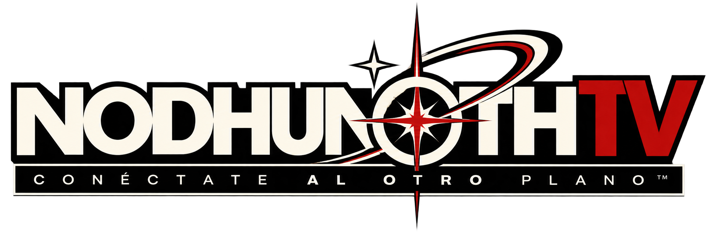

Bienvenidx, complanarix.
A partir del momento en que usted ha decidido cruzar la Membrana, es importante que sepa que la Esencia de la cual nos alimentamos habitualmente, aunque fluye de manera similar, no tiene la misma distribución ni las mismas condiciones de acceso que de Este Lado.
Para sobrevivir, tendrá que encontrar formas de alimentarse de aquello que las personas de aquel lado conocen como Miedo, Terror o Pánico.
Los miedos universales son relativamente fáciles de encontrar. Las fobias específicas, en cambio, tienen un aporte nutrimental y calórico considerablemente mayor.
Las personas y entidades que habitan aquel lado de la Membrana han decidido que nosotrxs somos quienes estamos Del Otro Lado.
A partir de esa decisión, nos han nombrado de distintas maneras a lo largo de la historia: aliens, monstruos, demonios, caídos, aberraciones, engendros, maldiciones, impíos, ilegales o cualquier otro mote que permita justificar nuestra exclusión.
Esto tiene una ventaja: el miedo hacia nosotrxs suele despertar con facilidad.
Y también algunas desventajas: podemos ser estigmatizadxs, perseguidxs, exorcisadxs, apresadxs, deportadxs, explotadxs, conjuradxs a voluntad o, en casos particularmente incómodos, adoradxs.
La Agencia de Reinserción Paulatina (L.A.R.P.) ha diseñado este canal de comunicación, Nod Hun Oth TV™, para facilitar su tránsito, migración y adaptación.
Aquí encontrará información de alto valor para su reinserción, organización y administración de su trance, además de recomendaciones de viaje y medidas de cuidado ante organizaciones como El Velo, la Agencia de Intrusión Sadista (AIS), La Camarilla y la Ordo Veritatis.
Porque cruzar la Membrana no debería ser complicado.
Ni ilegal.
Regresa a salvo, planarix.
